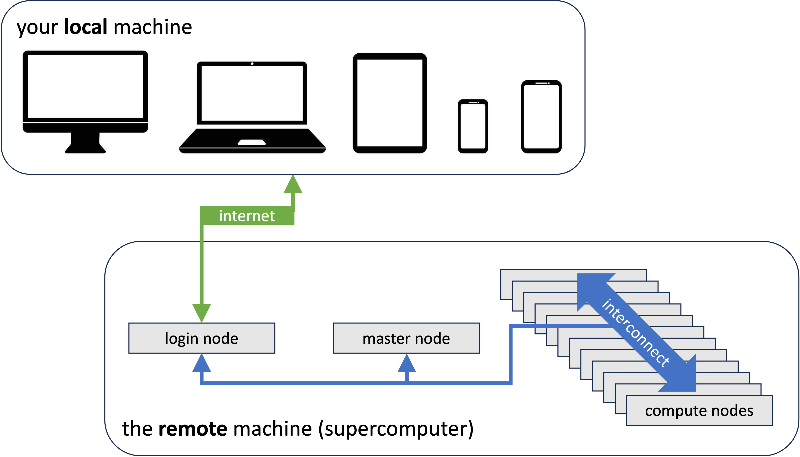

VSC infrastructure
This document describes how to set up your environment for the project work of the 2000wetppr course on the Tier-2 cluster of the University of Antwerp, which is also a VSC cluster. With minor modifications this can be applied to all VSC clusters. In general, the text is also applicable to other HPC clusters, but the modifictions needed may be a bit more substantial.
Note for students
These topics are logically ordered. Make sure that you carry out all the tasks in the order described.
A bit of terminology
In this course we often use the terms local and remote. The term local refers to the physical machine you are working on, i.e. your desktop or laptop, or even a tablet or cell phone. On the other hand remote refers to a machine which is usually in some other place, and which you are accessing from your local machine through a network connection (usually the internet) with the remote machine. In this course the remote machine is the university's Tier-2 supercomputer, Vaughan, at the time of writing.

The supercomputer, basically, consists of:
-
One or more login nodes. When users logs in to the supercomputer, a connection is established between the user's local machine and a login node. This is where users execute simple, not computationally intensive tasks, e.g.:
-
job preparation,
-
organization of the workspace and projects,
-
create input data,
-
software development tasks,
-
small tests,
-
...
-
-
A collection of compute nodes, potentially many thousands. This is where computationally intensive tasks of the users are executed. Typically, the user has no direct connection to the compute nodes.
-
One or more master nodes. The master node runs the resource manager and the scheduler> and is the connection between the login node and the compute nodes. The former keeps an eye on what the compute nodes are doing and whether they are ready to accept new computational tasks. The scheduler does the planning of that work.
To carry out some computational work on the compute nodes, the user must send a request to the scheduler, describing the task, the environment in which that task must be executed, and the resources (number of nodes, memory, accelerators, ...) needed by the task. Such a request is called a job script and the task is referred to as a job.
Preparing for the VSC infrastructure in 2000WETPPR
Applying for a guest account
Note
This section is only for students of the course 2000wetppr.
Students of the course 2000wetppr must apply for a guest account to access the university's HPC clusters, unless they already have a VSC account. The project work (see Evaluation) requires access to one of the university's HPC clusters.
To apply for a guest account, create a SSH public/private key pair (see below) and send it by e-mail to franky.backeljauw@uantwerpen.be with engelbert.tijskens@uantwerpen.be in cc. A guest account will subsequently be created for you.
Applying for a VSC account
Note
This section is only for researchers of Flemish institutes.
Researchers of Flemish research institutes can apply for a VSC account to get access to the VSC Tier-2 and Tier-1 supercomputers. See Getting access to VSC clusters. An ssh public/private key pair is also required.
Creating an ssh public/private key pair
An ssh public/private key pair in necessary for both a guest account (students) and a VSC account (researchers).
A ssh public/private key pair is a way for secure access to a system through the Secure Shell protocol. They are basically two small files with matching numbers. You may think of the public key as a lock. Everyone is allowed to see the lock, but no one can open the lock without its key, which is the private part of the key pair. The public key (the lock) will be placed on a system you need access to, in this case the Tier-2 supercomputer of our university. To access to the supercomputer (i.e., to open the lock) from, say, your laptop, you need the private key to be stored on your laptop (or a USB memory stick) and pass it to the SSH protocol, which will verify that the private key and the public key match. If case they do, the SSH protocol will open the lock and grant you access to the machine.
To create a ssh public/private key pair proceed as follows. Open a 'terminal'.
On Windows
The latest builds of Windows 10 and Windows 11 include a built-in SSH server and client that are based on OpenSSH. You can use the cmd prompt, powershell, or WSL (Windows subsystem for Linux) as a terminal. For older Windows versions, we recommend installing mobaxterm to generate a ssh public/private key pair.
On Linux
Most Linux distributions have a terminal application.
MacOSX
MacOSX comes with a build in Terminal.app. iTerm2 is a replacement for Terminal.app with many interesting extra features.
Type the following command at the prompt:
> ssh-keygen -t rsa -b 4096
You will then be prompted for a file location of the public and private key. You may accept the default location by entering. The default file location will look a bit different, depending on your OS. If the files already exist you can choose to overwrite them or to cancel the operation. You might want to change the filename of the key to a more meaningfull name, e.g. access_vaughan_rsa. Don't use blanks in the filename. Use hyphens (-) or underscores (_) instead.
Enter file in which to save the key (C:\Users\your_username/.ssh/id rsa) :
C:\Users\your_username/.ssh/id rsa already exists.
Overwrite (y/n)? y
You will then be prompted for a passphrase (twice). A passphrase provides an extra level of protection in case somebody would steal your private key. Press enter for an empty passphrase. (Passphrases are a little annoying when using VS Code (see below) for remote development.)
Enter passphrase (empty for no passphrase):
Enter same passphrase again:
Finally you will be notified of where the keys are stored:
Your identification has been saved in C:\Users\your_username/.ssh/id rsa.
Your public key has been saved in C:\Users\your_username/.ssh/id rsa.pub.
For students of 2000wetppr
To obtain a guest account, students must send their public key (and only the public key, the private
key is, well, um, private) to franky.backeljauw@uantwerpen.be with engelbert.tijskens@uantwerpen.be in cc. The public key is the one with the .pub extension.
Accessing Vaughan
Terminal based access
Vaughan is (at the time of writing) the University of Antwerp's Tier-2 HPC cluster. For terminal based access you
open a terminal (see above) and execute the command:
> ssh -i path/to/my/private-ssh-key your-user-id@login1-vaughan.hpc.uantwerpen.be
Last login: Mon Feb 27 12:40:32 2023 from 143.129.75.140
--------------------------------------------------------------------
Welcome to VAUGHAN !
...
Note
If the key is in sub-directory .ssh of your home directory, the -i path/to/my/private-ssh-key can be omitted.
The ssh command above, connects your terminal session to a login node (see above) of the Vaughan cluster.
After the command is finished, you can use the terminal as if you were working on the login node. The current working directory will be a location in your file system on the cluster, rather than on your local machine. Vaughan has two login nodes, login1-vaughan.hpc.uantwerpen.be and login2-vaughan.hpc.uantwerpen.be. You can also
use login-vaughan.hpc.uantwerpen.be. The system then will choose the login node with the highest availability.
Ssh comes with a .ssh/config file that allows you to store the arguments of frequently used ssh commands. E.g.
# file ~/.ssh/config
Host vn1
HostName login1-vaughan.hpc.uantwerpen.be
User vsc20170
IdentityFile /full/path/to/my/private-ssh-key
IdentitiesOnly yes
ForwardX11 yes
ForwardX11Trusted yes
ServerAliveInterval 60
which allows to abbreviate the above ssh command as ssh vn1. The config file can contain several Host entries.
IDE based access
While editing files in terminal based access is very well possible using terminal editors, e.g. vim or nano,
Many developers find code development using terminal based access rather cumbersome. IDEs (Integrated Development environment) provide a more user-friendly GUI based experience. Visual Studio Code provides a very reasonable user experience for both local aand remote development, providing a project directory tree, an editor pane, syntax highlighting, a debugging pane, a terminal, ... It is very well suited for our project work. So, install Visual Studio Code on your local machine. (It is available for Windows, Linux, and MacOSX).
Here are some useful VS Code extensions that you
should install. Click the Extensions icon in the activity bar on the left. You can search the Marketplace for
interesting extensions.

Necessary extensions
- Remote Development
Highly recommended extensions
- Python extension for Visual Studio Code
- Python extension pack
Recommended extensions for C++
- C/C++
- Better C++ syntax
- CMake
- CMake tools
Recommended extensions for Fortran
- Modern Fortran
There is a helpfull tutorial on Using VS Code for Remote Development, but before getting your hands dirty, please complete the steps below first.
VS Code fails to connect due to file quota exceeded
VS Code Remote installs some machinery in your home directory (~/.vscode-server) of the remote machine you are using. As VS Code can easily create a lot of files remotely, this can easily cause file quota exceeded on your user file system. When accessing the cluster through VS Code, you will probably only notice that VS Code fails to connect with the cluster. Log in on the cluster from a terminal with ssh and run
> ./path/to/wetppr/scripts/mv.vscode-server.sh
This moves the .vscode-server directory from your home directory to $VSC_DATA where file quota are much larger and cannot cause problems.
Setting up your remote environment
LMOD modules
A HPC cluster provides you with many installed software packages. However, none of them are immediately available. To make a package available, you must load the corresponding software module. (These modules, also known as LMOD modules, are a different module kind than the Python modules). In the project directory scripts/vaughan/ you find a script env-lmod.sh that can be sourced to load a set of commonly used LMOD modules in this course. Additional modules can be loaded as module load <module-name>, or the shorthand ml <module-name> . Sourcing a script differs from executing it in that it modifies the current environment (see _e.g. this). A script is sourced through the source command:
> cd path/to/wetppr
> source scripts/vaughan/env-lmod.sh
Using toolchain_name foss/2022a
module load calcua/2022a
module load foss
module load SciPy-bundle
module load numba
wip-tools dependencies:
module load CMake
module load git
module load gh
The env-lmod.sh script can be used to load the modules for different toolchains and versions:
> source scripts/vaughan/env-lmod.sh intel # => intel/2022a
> source scripts/vaughan/env-lmod.sh foss/2023a # => foss/2022a
The foss toolchain uses the GCC compilers to build software, whereas the intel toolchain uses the Intel compilers.
Tip
The source command can be abbreviated as ..
Tip
Sourcing a script modifies your environment for the time of your shell session. Every time you start a new shell session, you must reload these modules. Initially, it might be tempting to source the script in your .bashrc. However, soon you will discover that such scripts depend on the project you are working on, and that it is better to have it somewhere in your project directory.
Tip
In order to be able to execute a shell script, it must be made executable (chmod +x <path/to/script>). Shell scripts that intend to modify the environment, like env-lmod.sh, and thus must be sourced, need not be executable. If you do not make the script executable, it can only be sourced. In this way you avoid the surprises from an unmodified environment after executing a script that expect to be sourced. (There are also [tricks to detect if a script is being sourced(https://stackoverflow.com/questions/2683279/how-to-detect-if-a-script-is-being-sourced)] or not.)
Wiptools
Wiptools is a Python package that can simplify your project management considerably. If you haven't already done so, source the env-lmod.sh script above and install wip-tools in a (remote) terminal as:
> pip install --user wiptools
...
If you are interested in building binary extension modules from C++, you should also install nanobind
> pip install --user nanobind
...
Note
The --user flag instructs pip to install the package in the directory defined by the environment variable ${PYTHONUSERBASE}. The default install path of pip is a system location for which you do not have write permissions. Omitting --user would raise a PermissionError. When installing on your local machine, the --user flag may be omitted.
Warning
Before starting to use wiptools, checkout these prerequisites.
Submitting jobs on Vaughan
Unlike your personal computer, which you use mainly interactively, a supercomputer is mostly used in batch mode. To execute some computational work, you send a request to the scheduler specifying the work and how you want it to be executed. You must specify
-
the resources you need,
-
how the environment must be set up, i.e. necessary LMOD modules and environment variables, and
-
the command(s) you want to execute.
Such a request is called a job script. The scheduler decides which compute nodes will be used for your job and when it will be started, based on a fair share policy and the availability of the resources of the cluster.
Most modern supercomputers - all VSC clusters - use Slurm for resource management and scheduling. An extensive description about using Slurm on Vaughan can be found here.
Here is a simple job script, annotated with explanations for each line:
<!-- BEGIN INCLUDE ../scripts/vaughan/hello-mpi4py/hello-mpi4py.slurm -->
#!/bin/bash
### The line above is the shebang. It specifies the interpreter for the script.
### (see https://linuxhandbook.com/shebang/). Always /bin/bash for job scripts.
### Submit this job from the parent directory as:
### > cd path/to/wetppr/scripts/vaughan/hello-mpi4py
### > sbatch hello-mpi4py.slurm
### Slurm job script parameters ################################################
### Accounting info. Specify the account from which credits will be taken to
### execute this job. At the time of writing (11/2023) only applicable on
### the VSC Tier-1 computer Hortense and the Tier-2 supercomputers at KU Leuven,
### soon also in Tier-2 supercomputers at UAntwerpen.
### SBATCH --account=<account-name>
### Specify the job name
#SBATCH --job-name hello-mpi4py
### Redirect output written to stdout to file <job-name>.<job-id>.stdout
### Redirect output written to stderr to file <job-name>.<job-id>.stderr
### This groups your files nicely in a alphabetical listing.
#SBATCH -o %x.%j.stdout
#SBATCH -e %x.%j.stderr
### Slurm resource specifications
### Request 1 compute node
#SBATCH --nodes=1
### Request 16 MPI processes
#SBATCH --ntasks=16
### Request 1 CPU per MPI process (no hybrid OpenMP-MPI)
#SBATCH --cpus-per-task=1
### Tell Slurm that you expect the job to end in 5 minutes.
### (Abort the job if it takes longer).
#SBATCH --time=00:05:00
### Prepare the environment for the job ########################################
### Source the env-lmod.sh script to loads the LMOD modules needed.
### We request it to use the foss toolchain.
source ../env-lmod.sh foss
### Specify the computational work #############################################
### Run the Python script hello-mpi4py.py on the requested resources by calling
### srun (this is a Slurm command)
srun -n${SLURM_NTASKS} -c${SLURM_CPUS_PER_TASK} --exclusive --unbuffered python hello-mpi4py.py
<!-- END INCLUDE -->
This job script reqests the parallel execution of a simple Python script hello-mpi4py.py that prints some environment variables set by Slurm, and a line for each MPI process with some info about the MPI process:
<!-- BEGIN INCLUDE ../scripts/vaughan/hello-mpi4py/hello-mpi4py.py -->
import os
jobid = os.getenv('SLURM_JOB_ID')
stepid = os.getenv('SLURM_STEP_ID')
pid = os.getpid()
affinity = os.sched_getaffinity(0) # set of the CPUs used by the current MPI proces
from mpi4py import MPI
comm = MPI.COMM_WORLD
def print_environment_variable(name):
"""Print the name and the value of an environment value."""
value = os.getenv(name)
print(f"${{{name}}}={value}")
if __name__ == '__main__':
# Print some environment variables (only if the MPI rank is 0)
if comm.rank == 0:
print_environment_variable('SLURM_NTASKS')
print_environment_variable('SLURM_CPUS_PER_TASK')
# Print a line with the job-id, job-step-id, MPI rank, total number of MPI
# processes, process id, and the affinity (the id of the CPU on which
# the MPI process is running). Every MPI process will print one line.
print(f'jobid.stepid={jobid}.{stepid}, MPI_rank={comm.rank}/{comm.size}, {pid=} : affinity={affinity}')
<!-- END INCLUDE -->
The job is submitted from the login node as:
> cd path/to/wetppr/scripts/vaughan/hello-mpi4py
> sbatch mpi4py_hello_world.slurm
Note that we first cd into the parent directory of the job script because the job script uses paths relative to the parent directory ()../env-lmod.sh and hello-mpi4py.py). If all goes well, sbatch responds with something like:
Submitted batch job 1186356
Where 1186356 is the job-id.
Tip
If something goes wrong with the job and you need help from the system administrator, always mention the job-id.
The job is now in the job queue. You can check the status of all your submitted jobs with the squeue command:
> squeue
JOBID PARTITION NAME USER ST TIME NODES NODELIST(REASON)
1186356 zen2 hello-mp vsc20170 PD 0:00 2 (Priority)
The ST column shows the status of your job. PD means 'pending', the job is waiting for resource allocation. It will eventually run. Once running, it will show R as a status code and the TIME column will show the walltime of the job. Once completed the status will be 'CD' and after some minutes, it will disappear from the output of the squeue command. The directory wetppr/scripts/vaughan_examples now contains two extra files:
> ls -l
-rw-rw-r-- 1 vsc20170 vsc20170 0 Oct 26 09:32 hello-mpi4py.1186356.stderr
-rw-rw-r-- 1 vsc20170 vsc20170 1306 Oct 26 09:43 hello-mpi4py.1186356.stdout
-rw-rw-r-- 1 vsc20170 vsc20170 973 Oct 26 09:42 hello-mpi4py.py
-rw-rw-r-- 1 vsc20170 vsc20170 1826 Oct 26 08:56 hello-mpi4py.slurm
The job has created two output files with the output written to stderr and stdout, respectively. As requested by the job script lines #SBATCH -o %x.%j.stdout and #SBATCH -e %x.%j.stderr, they are compose as <job-name>.<job-id>.stdout and <job-name>.<job-id>.stderr, respectively. Error messages are normally written to the stderr file, which is empty in this case, as indicated by the 0 file size. The output of the Python script hello-mpi4py.py appears in hello-mpi4py.1186356.stdout, as well as that of env-lmod.sh, which precedes that of hello-mpi4py.py .
<!-- BEGIN INCLUDE ../scripts/vaughan/hello-mpi4py/hello-mpi4py.1186356.stdout_ok -->
Using toolchain_name foss/2022a
module load calcua/2022a
module load foss
module load SciPy-bundle
module load numba
wip-tools dependencies:
module load CMake
module load git
module load gh
${SLURM_NTASKS}=16
${SLURM_CPUS_PER_TASK}=1
jobid.stepid=1186356.0, MPI_rank=0/16, pid=1489956 : affinity={0}
jobid.stepid=1186356.0, MPI_rank=1/16, pid=1489957 : affinity={1}
jobid.stepid=1186356.0, MPI_rank=2/16, pid=1489958 : affinity={2}
jobid.stepid=1186356.0, MPI_rank=3/16, pid=1489959 : affinity={3}
jobid.stepid=1186356.0, MPI_rank=4/16, pid=1489960 : affinity={4}
jobid.stepid=1186356.0, MPI_rank=5/16, pid=1489961 : affinity={5}
jobid.stepid=1186356.0, MPI_rank=6/16, pid=1489962 : affinity={6}
jobid.stepid=1186356.0, MPI_rank=7/16, pid=1489963 : affinity={7}
jobid.stepid=1186356.0, MPI_rank=8/16, pid=1489964 : affinity={8}
jobid.stepid=1186356.0, MPI_rank=9/16, pid=1489965 : affinity={9}
jobid.stepid=1186356.0, MPI_rank=10/16, pid=1489966 : affinity={10}
jobid.stepid=1186356.0, MPI_rank=11/16, pid=1489967 : affinity={11}
jobid.stepid=1186356.0, MPI_rank=12/16, pid=1489968 : affinity={12}
jobid.stepid=1186356.0, MPI_rank=13/16, pid=1489969 : affinity={13}
jobid.stepid=1186356.0, MPI_rank=14/16, pid=1489970 : affinity={14}
jobid.stepid=1186356.0, MPI_rank=15/16, pid=1489971 : affinity={15}
<!-- END INCLUDE -->
We already explained the job-id. The step-id is tied to an individual srun command. The job script has only one srun command, so the step-id is always 0 (counting starts at 0, in C/C++/Python tradition). The MPI rank is tied to he MPI process running. The job script requested #SBATCH --ntasks=16, hence, the MPI rank ranges from 0 to 15. Pid is the process id. It refers to the Linux process of the given MPI rank. Finally, affinity is the set of CPUs on which the process runs. Since the job script requested #SBATCH --cpus-per-task=1, each MPI rank uses only a single CPU. In hybrid MPI-OpenMP programs, an MPI rank can use OpenMP parallel sections over several CPUs. In that case one would request, e.g., #SBATCH --cpus-per-task=4 and the afinity sets would show 4 different CPUs.
The job above requested only a single compute node and a very short wall time (5'). Often, it will start executing allmost immediately after submitting. For larger jobs, requiring many nodes, the scheduler has to find a moment at which the number of nodes requested are available (that is, without work load). Typically, one has to wait a bit before the job starts. The waiting time depends on the total work load of the cluster, but rarely exceeds more than a day. To know when your job starts and ends, you can ask the scheduler to send you an e-mail, by adding these lines to your job script:
### Send mail when the job starts, ands and fails
#SBATCH --mail-type=BEGIN,END,FAIL
### Send mail to this address:
#SBATCH -–mail-user=<your e-mail address>
Note that the maximum wall time for a job is 72 hours. Longer jobs must be split into pieces shorter than 72 hours. Jobs of 1 hour or less have higher priority.
Recommended steps from here
- A helpfull tutorial on Using VS Code for Remote Development
- The Getting started with wip